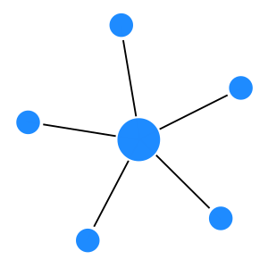

Questo tipo di architettura prevede due ruoli distinti:
- server
- Offre un qualche servizio, potrebbe trattarsi di una macchina o più in generale di un programma come ad esempio un server web. Questa entità resta in attesa delle richieste da parte del client e se possibile le soddisfa.
- client
- Consuma (usa) i servizi offerti dal server. Anche in questo caso con questo termine ci si riferisce sia ad una macchina che ad un software specifico come ad esempio un browser. Questa entità si collega al server per ottenere i servizi.
In generale quando si parla di software è possibile che un programma sia contemporaneamente server e client, e che una singola macchina ospiti una serie di server.